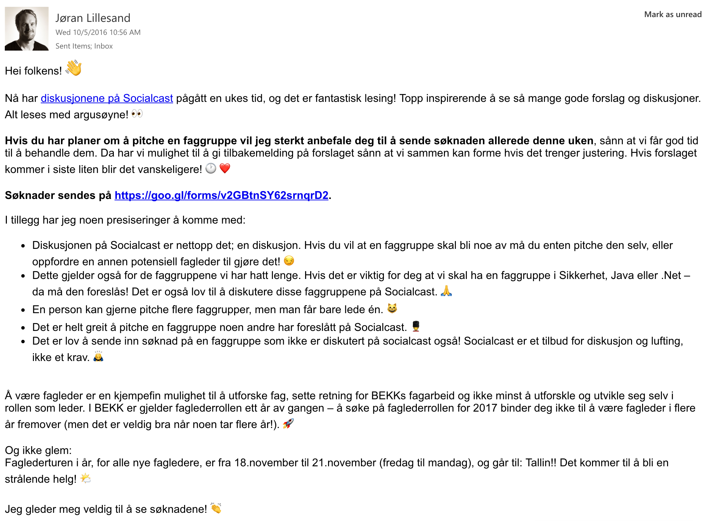
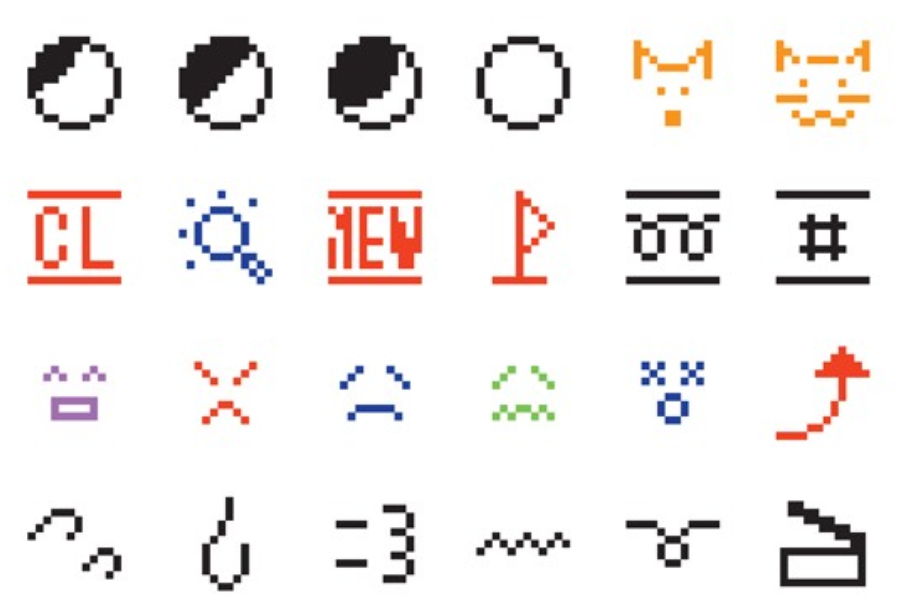
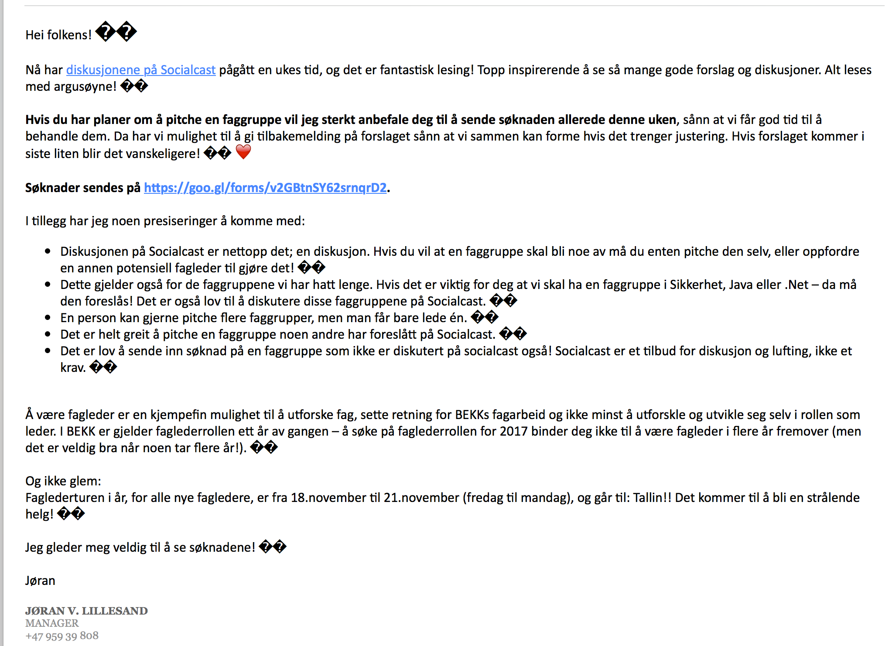
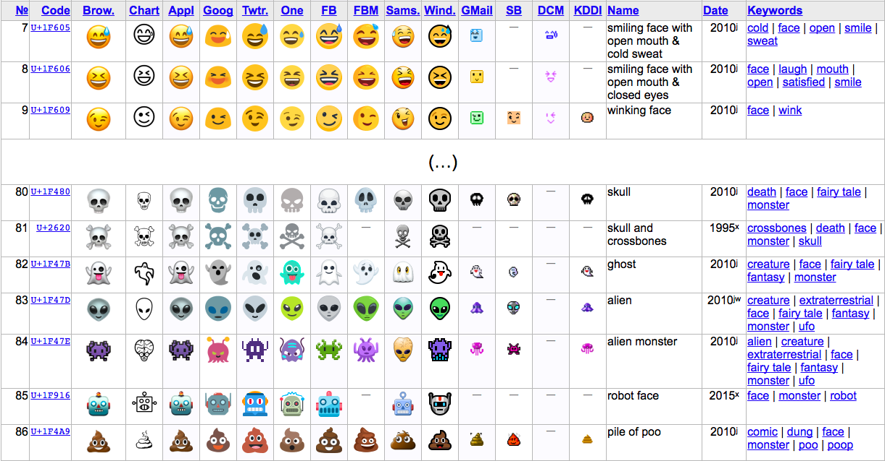

🙇
Hva er egentlig greia med Emojis?

(n_n)
smile
(._.)
uh…oh
(-_-)
sleepy
(;_;)
tears
(@_@)
confused
(*_*)
astonished
(x_x)
dead
(>_<)
ouch
(^_^)
happy
*(^_^)*
happier

🤓

👯♂️
👯
♂

http://unicode.org/emoji/charts/full-emoji-list.html
🌮
🏳️🌈
👩🚒
👨🏾🚀
💁♂️
🚀
👋